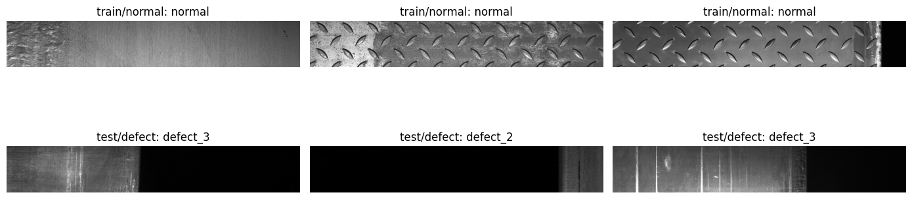
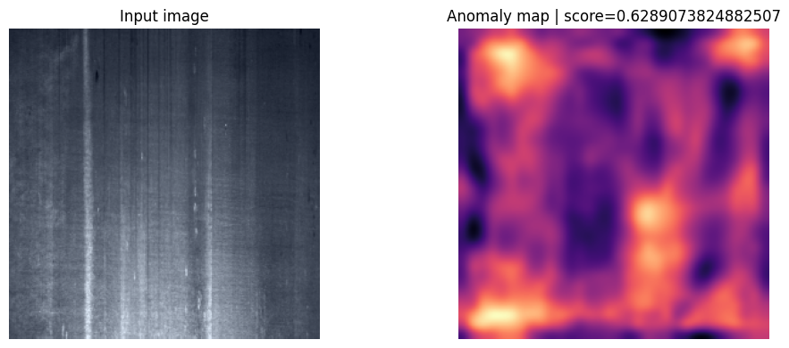
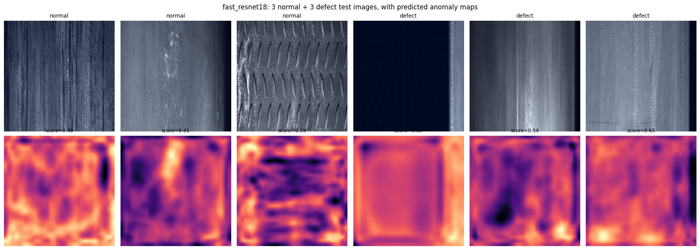
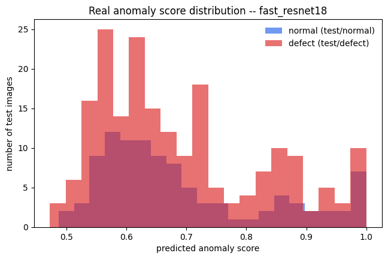
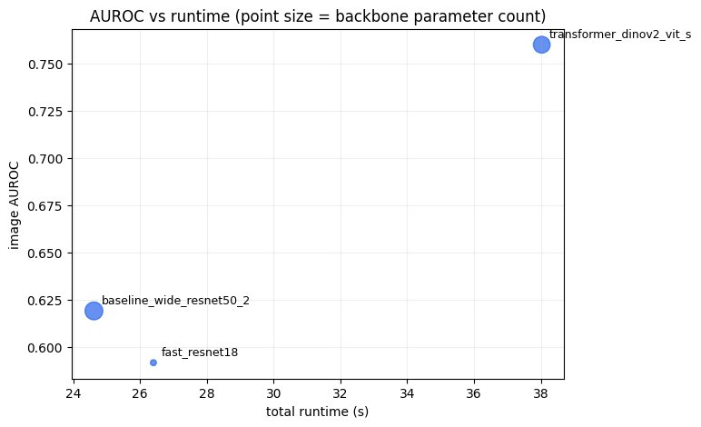

Hands-on: Anomalib PatchCore¶
This notebook trains PatchCore on the prepared dataset in dataset/. It uses the module-local Python (V1_D2 Anomaly) kernel created by setup_workshop_env.ps1.
Context¶
The previous notebook checked, with whole-image embeddings, whether a pretrained backbone can even tell normal and defective steel apart. This notebook builds the real thing: Anomalib’s implementation of PatchCore, using local patch embeddings (not whole-image ones), a proper coreset-reduced memory bank, and calibrated image-level metrics.
You will not write PatchCore from scratch. That would take far longer than a workshop session, and anomalib is a maintained, tested library used in real industrial deployments. Instead, this notebook is built around Anomalib’s own building blocks (Folder, Patchcore, Engine), with a deliberate amount of explanation about what each one is doing under the hood, so that using a library does not mean using a black box. By the end, you will fit and evaluate PatchCore end to end, inspect its heatmaps on real steel images, and compare backbones and hyperparameters quantitatively.
import os
from pathlib import Path
MODULE_ROOT = Path(f"/projappl/project_465002387/DEEP_Inspection_Material_Science/users/{os.environ['USER']}")
DATASET_ROOT = Path(r'/projappl/project_465002387/DEEP_Inspection_Material_Science/data') / 'dataset_anomaly'
MODEL_CACHE = MODULE_ROOT / '_model_cache'
MODEL_CACHE.mkdir(parents=True, exist_ok=True)
os.environ.setdefault('TORCH_HOME', str(MODEL_CACHE / 'torch'))
os.environ.setdefault('HF_HOME', str(MODEL_CACHE / 'huggingface'))
os.environ.setdefault('HF_HUB_DISABLE_SYMLINKS_WARNING', '1')
print('Module root:', MODULE_ROOT)
print('Dataset root:', DATASET_ROOT)
print('Model cache:', MODEL_CACHE)
Module root: /projappl/project_465002387/DEEP_Inspection_Material_Science/users/saeedima
Dataset root: /projappl/project_465002387/DEEP_Inspection_Material_Science/data/dataset_anomaly
Model cache: /projappl/project_465002387/DEEP_Inspection_Material_Science/users/saeedima/_model_cache
import sys
import matplotlib.pyplot as plt
import numpy as np
import pandas as pd
from PIL import Image
import torch
from anomalib.data import Folder
from anomalib.engine import Engine
from anomalib.models import Patchcore
1. Confirm the Prepared Dataset¶
PatchCore memory building uses only normal training images. The defect images are used for testing and discussion.
This first cell is a habit worth keeping in any real project, not just this workshop: assert your assumptions about the data before spending minutes fitting a model on top of them. If train/normal accidentally pointed at the wrong folder, or prepare_workshop_dataset.py had not been (re-)run, the failure would otherwise show up much later as a confusing metric rather than a clear, immediate error here.
metadata = pd.read_csv(DATASET_ROOT / 'metadata.csv')
display(metadata.groupby(['workshop_split', 'label']).size())
display(metadata[metadata['label'] == 'defect']['defect_class'].value_counts())
assert (DATASET_ROOT / 'anomaly' / 'train' / 'normal').exists()
assert (DATASET_ROOT / 'anomaly' / 'test' / 'normal').exists()
assert (DATASET_ROOT / 'anomaly' / 'test' / 'defect').exists()
workshop_split label
test/defect defect 400
test/normal normal 200
train/normal normal 600
dtype: int64
defect_class
defect_3 119
defect_1 53
defect_4 46
defect_2 45
defect_3+defect_4 44
defect_1+defect_3 41
defect_1+defect_2 35
defect_2+defect_3 14
defect_1+defect_2+defect_3 2
defect_2+defect_4 1
Name: count, dtype: int64
The three folders being asserted above map directly onto Anomalib’s Folder datamodule in Section 3: normal_dir (train/normal), normal_test_dir (test/normal), and abnormal_dir (test/defect). Anomalib does not need a train/defect folder at all. There is deliberately no such thing in this dataset, because PatchCore is never allowed to look at a single defect image while building its memory bank.
samples = pd.concat([
metadata[metadata['workshop_split'] == 'train/normal'].sample(3, random_state=10),
metadata[metadata['workshop_split'] == 'test/defect'].sample(3, random_state=11),
])
fig, axes = plt.subplots(2, 3, figsize=(14, 5))
for ax, (_, row) in zip(axes.ravel(), samples.iterrows()):
ax.imshow(Image.open(DATASET_ROOT / row.relative_path).convert('RGB'))
ax.set_title(f"{row.workshop_split}: {row.defect_class}")
ax.axis('off')
plt.tight_layout()

2. Choose a PatchCore Preset¶
Start with fast_resnet18 to verify the workflow. PATCHCORE_PRESETS has five options spanning a fast CNN, a strong CNN baseline, a modern ConvNeXt CNN, a lightweight EfficientNet, and a DINOv2 transformer. Each preset also sets num_neighbors: the number of nearest memory-bank neighbors averaged into each patch’s anomaly score (a real Patchcore constructor argument, default 9, not previously exposed here). More intuitively, num_neighbors is the number of “votes” each patch gets on whether it is anomalous, based on the distance from its nearest neighbors in the memory bank. The default of 9 is a good balance between robustness and sensitivity, but you can experiment with it later. The final “vote” is the average of the distances to the nearest neighbors, which is then normalized into a 0-1 anomaly score.
What layers actually selects¶
The theory notebook’s explained that early CNN layers capture edges and texture, while later layers capture larger, more semantic shapes. layers is where that distinction becomes a concrete choice: it tells Anomalib which intermediate feature maps to pull out of the backbone and use as patch descriptors (for example 'layer2' and 'layer3' for the ResNet family). PatchCore deliberately avoids the first layer (too raw, mostly edges and color, not distinctive) and the last layer (too semantic and coarse-grained – by the time a CNN has decided “this looks like a generic object”, it has thrown away the fine texture detail steel defects actually live in). The middle layers are typically the sweet spot for exactly this kind of local-texture anomaly detection, which is why every preset here picks two adjacent mid-network stages.
A word of caution on coreset_sampling_ratio: coreset selection is a sequential greedy algorithm (Section 4.2 of the theory notebook shows exactly how it works), so its cost scales roughly with coreset_size x feature_dimensions per training run, not just with the ratio. That is why the ratios below vary so much across presets: wide_resnet50_2 has about 4x more feature channels per patch than resnet18, so its ratio is set roughly 4x lower to land in a similar runtime ballpark, and efficientnet_b0’s much smaller feature dimension means it can afford a higher ratio for the same cost. If you raise any of these when running the models, expect a real (sometimes large) runtime hit, not just “a bit slower”, and expect that effect to be much stronger for the CNNs with more channels.
PATCHCORE_PRESETS = {
'fast_resnet18': {
'backbone': 'resnet18',
'layers': ['layer2', 'layer3'],
'coreset_sampling_ratio': 0.01,
'num_neighbors': 5,
'train_batch_size': 32,
'eval_batch_size': 32,
'note': 'fastest smoke test, weakest features',
},
'baseline_wide_resnet50_2': {
'backbone': 'wide_resnet50_2',
'layers': ['layer2', 'layer3'],
'coreset_sampling_ratio': 0.002,
'num_neighbors': 9,
'train_batch_size': 16,
'eval_batch_size': 16,
'note': 'classic PatchCore paper baseline',
},
'strong_convnext_tiny': {
'backbone': 'convnext_tiny',
'layers': ['stages.1', 'stages.2'],
'coreset_sampling_ratio': 0.005,
'num_neighbors': 9,
'train_batch_size': 16,
'eval_batch_size': 16,
'note': 'modern ConvNeXt CNN',
},
'efficient_effnet_b0': {
'backbone': 'efficientnet_b0',
'layers': ['blocks.2', 'blocks.4'],
'coreset_sampling_ratio': 0.02,
'num_neighbors': 9,
'train_batch_size': 32,
'eval_batch_size': 32,
'note': 'lightweight/mobile-oriented CNN, fewer params',
},
'transformer_dinov2_vit_s': {
'backbone': 'vit_small_patch14_dinov2.lvd142m',
'layers': ['blocks.9', 'blocks.10', 'blocks.11'],
'coreset_sampling_ratio': 0.0025,
'num_neighbors': 5,
'train_batch_size': 8,
'eval_batch_size': 8,
'image_size': (518, 518), # this DINOv2 checkpoint was pretrained at 518x518 and errors on any other input size
'note': 'transformer, self-supervised DINOv2 features',
},
}
SELECTED_PRESET = 'fast_resnet18'
config = PATCHCORE_PRESETS[SELECTED_PRESET]
config
{'backbone': 'resnet18',
'layers': ['layer2', 'layer3'],
'coreset_sampling_ratio': 0.01,
'num_neighbors': 5,
'train_batch_size': 32,
'eval_batch_size': 32,
'note': 'fastest smoke test, weakest features'}
3. Build Anomalib Objects¶
The Folder datamodule points to the prepared local dataset. The Patchcore model receives the selected backbone and feature layers.
What each object is actually responsible for¶
It helps to know what these three lines are actually standing in for, since none of them do very much by themselves. They configure work that happens later:
Folderis a PyTorch LightningDataModule: it scans the three directories you asserted in Section 1, builds aDataset/DataLoaderpair for training and one for testing, and applies a default resize + normalization transform matching the chosen backbone. You are not writing any file-scanning or batching code.Folderis doing exactly whatSteelImageDatasetdid by hand in the previous notebook, generalized to Anomalib’s whole model zoo.Patchcoreis the model definition: which backbone, which layers, how aggressively to shrink the memory bank, how many neighbors to average. Building it does essentially no work yet, it just downloads/loads the pretrained backbone weights and allocates an empty memory bank.Engineis Anomalib’s thin wrapper around a PyTorch LightningTrainer. It is what actually runs things later (engine.fit(...),engine.test(...)), picking CPU or GPU, looping over batches, and calling the right methods on the model at the right time. Anomalib uses Lightning under the hood for every one of its ~20 different anomaly detection models, so switching from PatchCore to a different method later would reuse this exact sameEnginepattern.
One detail is backbone-specific: Anomalib resizes every image to 256x256 by default, which is fine for the CNN backbones but wrong for vit_small_patch14_dinov2.lvd142m. That checkpoint was pretrained at a fixed 518x518 resolution and raises an error on any other input size. The image_size key in that preset overrides the default resize via Patchcore.configure_pre_processor(...); the other presets leave it unset and get Anomalib’s default.
datamodule = Folder(
name='severstal_patchcore',
root=DATASET_ROOT / 'anomaly',
normal_dir='train/normal',
abnormal_dir='test/defect',
normal_test_dir='test/normal',
train_batch_size=config['train_batch_size'],
eval_batch_size=config['eval_batch_size'],
num_workers=0,
)
pre_processor = Patchcore.configure_pre_processor(image_size=config['image_size']) if config.get('image_size') else True
model = Patchcore(
backbone=config['backbone'],
layers=config['layers'],
pre_trained=True,
coreset_sampling_ratio=config['coreset_sampling_ratio'],
num_neighbors=config['num_neighbors'],
pre_processor=pre_processor,
)
accelerator = 'gpu' if torch.cuda.is_available() else 'cpu'
engine = Engine(
accelerator=accelerator,
devices=1,
max_epochs=1,
logger=False,
enable_progress_bar=False, # avoids a rich/Lightning progress-bar crash under headless notebook execution
default_root_dir=MODULE_ROOT / 'results',
)
print('accelerator:', accelerator)
print(model)
accelerator: gpu
Patchcore(
(pre_processor): PreProcessor(
(transform): Compose(
Resize(size=[256, 256], interpolation=InterpolationMode.BILINEAR, antialias=True)
Normalize(mean=[0.485, 0.456, 0.406], std=[0.229, 0.224, 0.225], inplace=False)
)
(export_transform): Compose(
Resize(size=[256, 256], interpolation=InterpolationMode.BILINEAR, antialias=False)
Normalize(mean=[0.485, 0.456, 0.406], std=[0.229, 0.224, 0.225], inplace=False)
)
)
(post_processor): PostProcessor(
(_image_threshold_metric): F1AdaptiveThreshold()
(_pixel_threshold_metric): F1AdaptiveThreshold()
(_image_min_max_metric): MinMax()
(_pixel_min_max_metric): MinMax()
)
(evaluator): Evaluator(
(val_metrics): ModuleList()
(test_metrics): ModuleList(
(0): AUROC()
(1): F1Score()
(2): AUROC()
(3): F1Score()
)
)
(model): PatchcoreModel(
(feature_extractor): TimmFeatureExtractor(
(feature_extractor): FeatureListNet(
(conv1): Conv2d(3, 64, kernel_size=(7, 7), stride=(2, 2), padding=(3, 3), bias=False)
(bn1): BatchNorm2d(64, eps=1e-05, momentum=0.1, affine=True, track_running_stats=True)
(act1): ReLU(inplace=True)
(maxpool): MaxPool2d(kernel_size=3, stride=2, padding=1, dilation=1, ceil_mode=False)
(layer1): Sequential(
(0): BasicBlock(
(conv1): Conv2d(64, 64, kernel_size=(3, 3), stride=(1, 1), padding=(1, 1), bias=False)
(bn1): BatchNorm2d(64, eps=1e-05, momentum=0.1, affine=True, track_running_stats=True)
(drop_block): Identity()
(act1): ReLU(inplace=True)
(aa): Identity()
(conv2): Conv2d(64, 64, kernel_size=(3, 3), stride=(1, 1), padding=(1, 1), bias=False)
(bn2): BatchNorm2d(64, eps=1e-05, momentum=0.1, affine=True, track_running_stats=True)
(act2): ReLU(inplace=True)
)
(1): BasicBlock(
(conv1): Conv2d(64, 64, kernel_size=(3, 3), stride=(1, 1), padding=(1, 1), bias=False)
(bn1): BatchNorm2d(64, eps=1e-05, momentum=0.1, affine=True, track_running_stats=True)
(drop_block): Identity()
(act1): ReLU(inplace=True)
(aa): Identity()
(conv2): Conv2d(64, 64, kernel_size=(3, 3), stride=(1, 1), padding=(1, 1), bias=False)
(bn2): BatchNorm2d(64, eps=1e-05, momentum=0.1, affine=True, track_running_stats=True)
(act2): ReLU(inplace=True)
)
)
(layer2): Sequential(
(0): BasicBlock(
(conv1): Conv2d(64, 128, kernel_size=(3, 3), stride=(2, 2), padding=(1, 1), bias=False)
(bn1): BatchNorm2d(128, eps=1e-05, momentum=0.1, affine=True, track_running_stats=True)
(drop_block): Identity()
(act1): ReLU(inplace=True)
(aa): Identity()
(conv2): Conv2d(128, 128, kernel_size=(3, 3), stride=(1, 1), padding=(1, 1), bias=False)
(bn2): BatchNorm2d(128, eps=1e-05, momentum=0.1, affine=True, track_running_stats=True)
(act2): ReLU(inplace=True)
(downsample): Sequential(
(0): Conv2d(64, 128, kernel_size=(1, 1), stride=(2, 2), bias=False)
(1): BatchNorm2d(128, eps=1e-05, momentum=0.1, affine=True, track_running_stats=True)
)
)
(1): BasicBlock(
(conv1): Conv2d(128, 128, kernel_size=(3, 3), stride=(1, 1), padding=(1, 1), bias=False)
(bn1): BatchNorm2d(128, eps=1e-05, momentum=0.1, affine=True, track_running_stats=True)
(drop_block): Identity()
(act1): ReLU(inplace=True)
(aa): Identity()
(conv2): Conv2d(128, 128, kernel_size=(3, 3), stride=(1, 1), padding=(1, 1), bias=False)
(bn2): BatchNorm2d(128, eps=1e-05, momentum=0.1, affine=True, track_running_stats=True)
(act2): ReLU(inplace=True)
)
)
(layer3): Sequential(
(0): BasicBlock(
(conv1): Conv2d(128, 256, kernel_size=(3, 3), stride=(2, 2), padding=(1, 1), bias=False)
(bn1): BatchNorm2d(256, eps=1e-05, momentum=0.1, affine=True, track_running_stats=True)
(drop_block): Identity()
(act1): ReLU(inplace=True)
(aa): Identity()
(conv2): Conv2d(256, 256, kernel_size=(3, 3), stride=(1, 1), padding=(1, 1), bias=False)
(bn2): BatchNorm2d(256, eps=1e-05, momentum=0.1, affine=True, track_running_stats=True)
(act2): ReLU(inplace=True)
(downsample): Sequential(
(0): Conv2d(128, 256, kernel_size=(1, 1), stride=(2, 2), bias=False)
(1): BatchNorm2d(256, eps=1e-05, momentum=0.1, affine=True, track_running_stats=True)
)
)
(1): BasicBlock(
(conv1): Conv2d(256, 256, kernel_size=(3, 3), stride=(1, 1), padding=(1, 1), bias=False)
(bn1): BatchNorm2d(256, eps=1e-05, momentum=0.1, affine=True, track_running_stats=True)
(drop_block): Identity()
(act1): ReLU(inplace=True)
(aa): Identity()
(conv2): Conv2d(256, 256, kernel_size=(3, 3), stride=(1, 1), padding=(1, 1), bias=False)
(bn2): BatchNorm2d(256, eps=1e-05, momentum=0.1, affine=True, track_running_stats=True)
(act2): ReLU(inplace=True)
)
)
)
)
(feature_pooler): AvgPool2d(kernel_size=3, stride=1, padding=1)
(anomaly_map_generator): AnomalyMapGenerator(
(blur): GaussianBlur2d()
)
)
)
4. Fit and Test¶
fit extracts normal features and builds the memory bank. There is no classifier fine-tuning loop like in supervised training – this is also why Engine above was created with max_epochs=1: PatchCore does not do gradient-based training over multiple epochs the way a CNN classifier would. One pass over the normal training images is enough to extract features and populate the memory bank.
What happens during engine.fit(...)¶
Concretely, in one pass over every train/normal image:
Each image is resized/normalized and pushed through the frozen backbone, stopping at the
layersselected in the preset, exactly the “image → feature map” step from the theory notebook’s Section 2, done for every training image.Each feature map is reshaped into a table of local patch vectors (the theory notebook’s Section 2.1
permute+reshapetrick), and every patch from every training image is pooled into one large candidate pool.Greedy coreset selection (theory notebook Section 4.2) picks a representative subset of that pool, sized by
coreset_sampling_ratio.That subset becomes the memory bank, the only thing PatchCore actually “remembers” from the entire training set.
No weights are updated anywhere in this process. The backbone stays exactly as pretrained; only the memory bank (a plain tensor of patch vectors, not a neural network layer) is being populated.
What happens during engine.test(...)¶
For every image in test/normal and test/defect: extract its patches the same way, find each patch’s nearest neighbor in the memory bank (theory notebook Section 3.1), aggregate patch distances into one image-level score, and compare that score against each image’s true label (normal or defect) to compute AUROC and F1. This is also the first point where the ground-truth labels are used at all – they play no role in fit, only in scoring how well the resulting anomaly scores rank defects above normals.
engine.fit(model=model, datamodule=datamodule)
test_results = engine.test(model=model, datamodule=datamodule)
test_results
GPU available: True (cuda), used: True
TPU available: False, using: 0 TPU cores
💡 Tip: For seamless cloud logging and experiment tracking, try installing [litlogger](https://pypi.org/project/litlogger/) to enable LitLogger, which logs metrics and artifacts automatically to the Lightning Experiments platform.
LOCAL_RANK: 0 - CUDA_VISIBLE_DEVICES: [0]
/projappl/project_465002387/DEEP_Inspection_Material_Science/workshopvenv/lib/python3.12/site-packages/lightning/pytorch/core/optimizer.py:183: `LightningModule.configure_optimizers` returned `None`, this fit will run with no optimizer
┏━━━┳━━━━━━━━━━━━━━━━┳━━━━━━━━━━━━━━━━┳━━━━━━━━┳━━━━━━━┳━━━━━━━┓ ┃ ┃ Name ┃ Type ┃ Params ┃ Mode ┃ FLOPs ┃ ┡━━━╇━━━━━━━━━━━━━━━━╇━━━━━━━━━━━━━━━━╇━━━━━━━━╇━━━━━━━╇━━━━━━━┩ │ 0 │ pre_processor │ PreProcessor │ 0 │ train │ 0 │ │ 1 │ post_processor │ PostProcessor │ 0 │ train │ 0 │ │ 2 │ evaluator │ Evaluator │ 0 │ train │ 0 │ │ 3 │ model │ PatchcoreModel │ 2.8 M │ train │ 0 │ └───┴────────────────┴────────────────┴────────┴───────┴───────┘
Trainable params: 2.8 M Non-trainable params: 0 Total params: 2.8 M Total estimated model params size (MB): 11.131 Modules in train mode: 19 Modules in eval mode: 69 Total FLOPs: 0
/projappl/project_465002387/DEEP_Inspection_Material_Science/workshopvenv/lib/python3.12/site-packages/lightning/pytorch/trainer/connectors/data_connector.py:434: The 'train_dataloader' does not have many workers which may be a bottleneck. Consider increasing the value of the `num_workers` argument` to `num_workers=15` in the `DataLoader` to improve performance.
/projappl/project_465002387/DEEP_Inspection_Material_Science/workshopvenv/lib/python3.12/site-packages/lightning/pytorch/trainer/connectors/data_connector.py:434: The 'val_dataloader' does not have many workers which may be a bottleneck. Consider increasing the value of the `num_workers` argument` to `num_workers=15` in the `DataLoader` to improve performance.
/projappl/project_465002387/DEEP_Inspection_Material_Science/workshopvenv/lib/python3.12/site-packages/lightning/pytorch/loops/fit_loop.py:538: Found 69 module(s) in eval mode at the start of training. This may lead to unexpected behavior during training. If this is intentional, you can ignore this warning.
Selecting Coreset Indices.: 100%|██████████| 6143/6143 [00:13<00:00, 457.41it/s]
`Trainer.fit` stopped: `max_epochs=1` reached.
The following callbacks returned in `LightningModule.configure_callbacks` will override existing callbacks passed to Trainer: Evaluator, ImageVisualizer, PostProcessor, PreProcessor
LOCAL_RANK: 0 - CUDA_VISIBLE_DEVICES: [0]
/projappl/project_465002387/DEEP_Inspection_Material_Science/workshopvenv/lib/python3.12/site-packages/lightning/pytorch/trainer/connectors/data_connector.py:434: The 'test_dataloader' does not have many workers which may be a bottleneck. Consider increasing the value of the `num_workers` argument` to `num_workers=15` in the `DataLoader` to improve performance.
/opt/venv/lib/python3.12/site-packages/torchmetrics/utilities/prints.py:43: UserWarning: The ``compute`` method of metric AUROC was called before the ``update`` method which may lead to errors, as metric states have not yet been updated.
warnings.warn(*args, **kwargs)
/opt/venv/lib/python3.12/site-packages/torchmetrics/utilities/prints.py:43: UserWarning: The ``compute`` method of metric F1Score was called before the ``update`` method which may lead to errors, as metric states have not yet been updated.
warnings.warn(*args, **kwargs)
┏━━━━━━━━━━━━━━━━━━━━━━━━━━━┳━━━━━━━━━━━━━━━━━━━━━━━━━━━┓ ┃ Test metric ┃ DataLoader 0 ┃ ┡━━━━━━━━━━━━━━━━━━━━━━━━━━━╇━━━━━━━━━━━━━━━━━━━━━━━━━━━┩ │ image_AUROC │ 0.5018500089645386 │ │ image_F1Score │ 0.7959595918655396 │ └───────────────────────────┴───────────────────────────┘
[{'image_AUROC': 0.5018500089645386, 'image_F1Score': 0.7959595918655396}]
test_results is Anomalib’s own summary – the same image_AUROC/image_F1Score numbers the theory notebook explained conceptually, now computed on your chosen preset and real steel images. Whatever their exact values, treat one number in isolation with caution: Section 7’s mini-competition is where these numbers become genuinely informative, by comparing them across presets rather than reading one in a vacuum.
5. Predict and Inspect Heatmaps¶
The score table is useful, but heatmaps are essential for inspection. A high score should ideally correspond to a plausible suspicious region.
predictions = engine.predict(model=model, datamodule=datamodule)
print(type(predictions), len(predictions) if predictions is not None else None)
first = predictions[0] if predictions else None
if first is not None:
print('first prediction type:', type(first))
if hasattr(first, 'keys'):
print('keys:', first.keys())
else:
print('attributes:', [name for name in dir(first) if not name.startswith('_')][:50])
ckpt_path is not provided. Model weights will not be loaded.
The following callbacks returned in `LightningModule.configure_callbacks` will override existing callbacks passed to Trainer: Evaluator, ImageVisualizer, PostProcessor, PreProcessor
LOCAL_RANK: 0 - CUDA_VISIBLE_DEVICES: [0]
/projappl/project_465002387/DEEP_Inspection_Material_Science/workshopvenv/lib/python3.12/site-packages/lightning/pytorch/trainer/connectors/data_connector.py:434: The 'predict_dataloader' does not have many workers which may be a bottleneck. Consider increasing the value of the `num_workers` argument` to `num_workers=15` in the `DataLoader` to improve performance.
<class 'list'> 10
first prediction type: <class 'anomalib.data.dataclasses.torch.image.ImageBatch'>
keys: ['image', 'gt_label', 'gt_mask', 'mask_path', 'anomaly_map', 'pred_score', 'pred_mask', 'pred_label', 'explanation', 'image_path']
Anomalib’s prediction object schema has changed across versions,sometimes a dict, sometimes a dataclass-like object, with key names like anomaly_map vs pred_mask moving between releases. Rather than hardcoding one shape and hoping it matches whatever Anomalib version is installed, the helpers below try several plausible names/attributes in order. This defensive style exists only because of that version churn; it is not a general pattern to copy into your own code.
One more detail: predictions has one entry per batch, not per image (batch size = eval_batch_size from the selected preset). show_prediction below picks a single sample out of that batch before plotting it.
def get_value(pred, *names):
for name in names:
if isinstance(pred, dict) and name in pred:
return pred[name]
if hasattr(pred, name):
return getattr(pred, name)
return None
def as_numpy(value):
if value is None:
return None
if torch.is_tensor(value):
value = value.detach().cpu()
if value.ndim == 3 and value.shape[0] in (1, 3):
value = value.permute(1, 2, 0)
return value.numpy()
return np.asarray(value)
def show_prediction(pred, sample_idx=0):
# engine.predict() returns one entry per *batch*, not per image, so pred['image']
# etc. still have a leading batch dimension -- index a single sample out of it first.
image = get_value(pred, 'image')
anomaly_map = get_value(pred, 'anomaly_map', 'pred_mask')
score = get_value(pred, 'pred_score', 'score')
image = as_numpy(image[sample_idx]) if image is not None else None
anomaly_map = as_numpy(anomaly_map[sample_idx]) if anomaly_map is not None else None
score = score[sample_idx] if score is not None else None
fig, axes = plt.subplots(1, 2, figsize=(11, 4))
if image is not None:
image = np.squeeze(image)
if image.ndim == 3:
image = (image - image.min()) / max(image.max() - image.min(), 1e-6)
axes[0].imshow(image)
axes[0].set_title('Input image')
axes[0].axis('off')
if anomaly_map is not None:
axes[1].imshow(np.squeeze(anomaly_map), cmap='magma')
axes[1].set_title(f'Anomaly map | score={score}')
axes[1].axis('off')
plt.tight_layout()
if predictions:
show_prediction(predictions[0])

5.1 A closer look: several examples and the real score distribution¶
One example is a start, but it is easy to accidentally pick an unusually easy or unusually hard case. The cells below flatten every batch in predictions into plain arrays (one entry per image, not per batch), so we can look at a proper handful of normal and defect examples side by side, and see the actual distribution of anomaly scores this run produced.
def flatten_predictions(predictions):
images, anomaly_maps, scores, gt_labels = [], [], [], []
for batch in predictions:
batch_images = get_value(batch, 'image')
batch_maps = get_value(batch, 'anomaly_map', 'pred_mask')
batch_scores = get_value(batch, 'pred_score', 'score')
batch_gt = get_value(batch, 'gt_label', 'label')
if batch_images is not None:
images.extend([as_numpy(img) for img in batch_images])
if batch_maps is not None:
anomaly_maps.extend([as_numpy(m) for m in batch_maps])
if batch_scores is not None:
scores.extend(as_numpy(batch_scores).tolist())
if batch_gt is not None:
gt_labels.extend(as_numpy(batch_gt).tolist())
return images, anomaly_maps, np.array(scores), np.array(gt_labels)
all_images, all_maps, all_scores, all_gt_labels = flatten_predictions(predictions)
print(f'Flattened {len(all_images)} individual predictions from {len(predictions)} batches.')
Flattened 300 individual predictions from 10 batches.
all_gt_labels follows Anomalib’s convention: 0 = normal, 1 = defect. These came along for free inside each prediction batch, we did not need to separately look up which folder each test image came from.
rng = np.random.default_rng(0)
normal_positions = np.where(all_gt_labels == 0)[0]
defect_positions = np.where(all_gt_labels == 1)[0]
grid_positions = list(rng.choice(normal_positions, size=min(3, len(normal_positions)), replace=False)) + \
list(rng.choice(defect_positions, size=min(3, len(defect_positions)), replace=False))
fig, axes = plt.subplots(2, len(grid_positions), figsize=(3 * len(grid_positions), 6.5))
for col, pos in enumerate(grid_positions):
image = np.squeeze(all_images[pos])
if image.ndim == 3:
image = (image - image.min()) / max(image.max() - image.min(), 1e-6)
axes[0, col].imshow(image)
axes[0, col].set_title('normal' if all_gt_labels[pos] == 0 else 'defect', fontsize=10)
axes[0, col].axis('off')
axes[1, col].imshow(np.squeeze(all_maps[pos]), cmap='magma')
axes[1, col].set_title(f'score={all_scores[pos]:.2f}', fontsize=9)
axes[1, col].axis('off')
fig.suptitle(f'{SELECTED_PRESET}: 3 normal + 3 defect test images, with predicted anomaly maps')
plt.tight_layout()
plt.show()

Look for two things across these six examples: do the brightest regions of the defect heatmaps actually land on the visible flaw (a convincing detection), or somewhere else entirely like a border or lighting artifact (a right-answer-wrong-reason case, per the theory notebook’s Section 7 failure modes)? And do any of the normal heatmaps light up anyway, which could bea potential false alarm worth understanding before trusting this preset’s F1 number?
fig, ax = plt.subplots(figsize=(7.5, 4.5))
ax.hist(all_scores[all_gt_labels == 0], bins=20, alpha=0.65, label='normal (test/normal)', color='#2563eb')
ax.hist(all_scores[all_gt_labels == 1], bins=20, alpha=0.65, label='defect (test/defect)', color='#dc2626')
ax.set_xlabel('predicted anomaly score')
ax.set_ylabel('number of test images')
ax.set_title(f'Real anomaly score distribution -- {SELECTED_PRESET}')
ax.legend(frameon=False)
plt.show()

This is the real, measured version of the theory notebook’s Figure 13. If the blue (normal) and red (defect) histograms overlap heavily, no threshold choice can cleanly separate them. That overlap is what a mediocre AUROC looks like in practice, not an abstract number. If they separate with only a little overlap, there is a real range of thresholds where this preset would do well, and the overlap region is exactly where you would expect the failure cases in the grid above to come from.
6. A Reusable Function: Run Any Preset End to End¶
Steps 3-5 above were done by hand for fast_resnet18. The function below packages exactly the same steps: build a datamodule, build a model, build an engine, fit, test, measure timing, so you can call it once per preset without retyping the pipeline. It returns one PresetResult per call, bundling the numbers worth comparing across presets: the two real metrics (image_auroc, image_f1), two proxies for “how much did this preset actually remember and how big is it” (memory_bank_size, backbone_params_m), and three timings (fit_time_s, test_time_s, total_time_s) so runtime is comparable on equal footing, not just eyeballed from progress bars.
One detail matters: each call builds a brand-new Folder, Patchcore, and Engine. Anomalib’s Engine caches its underlying Lightning trainer the first time you call fit/test and does not rebuild it on a later call. This means that reusing one Engine across multiple presets would silently mix up checkpoints and logs between runs. Building fresh objects per preset avoids that entirely.
import time
import gc
from dataclasses import dataclass
@dataclass
class PresetResult:
preset_name: str
backbone: str
coreset_sampling_ratio: float
num_neighbors: int
image_auroc: float
image_f1: float
memory_bank_size: int
backbone_params_m: float
fit_time_s: float
test_time_s: float
total_time_s: float
def get_metric(results_dict, *keys, default=float('nan')):
# Anomalib's metric key names/prefixes have moved before across versions;
# try each candidate key name in order rather than hardcoding one.
for key in keys:
if key in results_dict:
return results_dict[key]
return default
def run_patchcore_preset(preset_name):
preset_config = PATCHCORE_PRESETS[preset_name]
accelerator = 'gpu' if torch.cuda.is_available() else 'cpu'
preset_datamodule = Folder(
name='severstal_patchcore',
root=DATASET_ROOT / 'anomaly',
normal_dir='train/normal',
abnormal_dir='test/defect',
normal_test_dir='test/normal',
train_batch_size=preset_config['train_batch_size'],
eval_batch_size=preset_config['eval_batch_size'],
num_workers=0,
)
preset_pre_processor = (
Patchcore.configure_pre_processor(image_size=preset_config['image_size'])
if preset_config.get('image_size') else True
)
preset_model = Patchcore(
backbone=preset_config['backbone'],
layers=preset_config['layers'],
pre_trained=True,
coreset_sampling_ratio=preset_config['coreset_sampling_ratio'],
num_neighbors=preset_config['num_neighbors'],
pre_processor=preset_pre_processor,
)
# A fresh Engine per preset -- see markdown above for why.
preset_engine = Engine(
accelerator=accelerator,
devices=1,
max_epochs=1,
logger=False,
enable_progress_bar=False, # avoids a rich/Lightning progress-bar crash under headless notebook execution
default_root_dir=MODULE_ROOT / 'results' / preset_name,
)
backbone_params_m = sum(p.numel() for p in preset_model.model.feature_extractor.parameters()) / 1e6
t0 = time.perf_counter()
preset_engine.fit(model=preset_model, datamodule=preset_datamodule)
t1 = time.perf_counter()
preset_test_results = preset_engine.test(model=preset_model, datamodule=preset_datamodule)
t2 = time.perf_counter()
stats = preset_test_results[0] if preset_test_results else {}
result = PresetResult(
preset_name=preset_name,
backbone=preset_config['backbone'],
coreset_sampling_ratio=preset_config['coreset_sampling_ratio'],
num_neighbors=preset_config['num_neighbors'],
image_auroc=get_metric(stats, 'image_AUROC'),
image_f1=get_metric(stats, 'image_F1Score'),
memory_bank_size=int(preset_model.model.memory_bank.shape[0]),
backbone_params_m=backbone_params_m,
fit_time_s=t1 - t0,
test_time_s=t2 - t1,
total_time_s=t2 - t0,
)
# Release the model/engine before the next preset runs in this same kernel.
del preset_engine, preset_model, preset_datamodule
gc.collect()
if torch.cuda.is_available():
torch.cuda.empty_cache()
return result
7. Mini-Competition: Compare Presets¶
Pick 2-3 presets to compare, as running all five back to back adds up, and the point is discussion, not brute-force coverage. The image-level AUROC/F1 metrics are the only ones worth trusting here: the Folder datamodule was never given a mask_dir, so the pixel-level metrics Anomalib also reports are computed against empty ground truth and are not meaningful for this dataset.
If you add a backbone whose weights aren’t cached yet in _model_cache/, its first run will include a download, run it once ungraded before comparing runtimes, or the download time will confound the comparison.
PRESETS_TO_COMPARE = ['fast_resnet18', 'baseline_wide_resnet50_2', 'transformer_dinov2_vit_s']
preset_results = {}
for name in PRESETS_TO_COMPARE:
print(f'--- Running preset: {name} ---')
preset_results[name] = run_patchcore_preset(name)
comparison_df = pd.DataFrame([vars(r) for r in preset_results.values()])
comparison_df = comparison_df.sort_values('image_auroc', ascending=False).reset_index(drop=True)
print('=' * 80)
print('PATCHCORE PRESET COMPARISON')
print('=' * 80)
with pd.option_context('display.float_format', lambda x: f'{x:.4f}'):
print(comparison_df.to_string(index=False))
best = comparison_df.iloc[0]
print(f"\nBest AUROC: {best['preset_name']} ({best['image_auroc']:.4f}), "
f"{best['backbone_params_m']:.1f}M backbone params, {best['total_time_s']:.1f}s total")
--- Running preset: fast_resnet18 ---
GPU available: True (cuda), used: True
TPU available: False, using: 0 TPU cores
💡 Tip: For seamless cloud logging and experiment tracking, try installing [litlogger](https://pypi.org/project/litlogger/) to enable LitLogger, which logs metrics and artifacts automatically to the Lightning Experiments platform.
LOCAL_RANK: 0 - CUDA_VISIBLE_DEVICES: [0]
/projappl/project_465002387/DEEP_Inspection_Material_Science/workshopvenv/lib/python3.12/site-packages/lightning/pytorch/core/optimizer.py:183: `LightningModule.configure_optimizers` returned `None`, this fit will run with no optimizer
┏━━━┳━━━━━━━━━━━━━━━━┳━━━━━━━━━━━━━━━━┳━━━━━━━━┳━━━━━━━┳━━━━━━━┓ ┃ ┃ Name ┃ Type ┃ Params ┃ Mode ┃ FLOPs ┃ ┡━━━╇━━━━━━━━━━━━━━━━╇━━━━━━━━━━━━━━━━╇━━━━━━━━╇━━━━━━━╇━━━━━━━┩ │ 0 │ pre_processor │ PreProcessor │ 0 │ train │ 0 │ │ 1 │ post_processor │ PostProcessor │ 0 │ train │ 0 │ │ 2 │ evaluator │ Evaluator │ 0 │ train │ 0 │ │ 3 │ model │ PatchcoreModel │ 2.8 M │ train │ 0 │ └───┴────────────────┴────────────────┴────────┴───────┴───────┘
Trainable params: 2.8 M Non-trainable params: 0 Total params: 2.8 M Total estimated model params size (MB): 11.131 Modules in train mode: 19 Modules in eval mode: 69 Total FLOPs: 0
/projappl/project_465002387/DEEP_Inspection_Material_Science/workshopvenv/lib/python3.12/site-packages/lightning/pytorch/trainer/connectors/data_connector.py:434: The 'train_dataloader' does not have many workers which may be a bottleneck. Consider increasing the value of the `num_workers` argument` to `num_workers=15` in the `DataLoader` to improve performance.
/projappl/project_465002387/DEEP_Inspection_Material_Science/workshopvenv/lib/python3.12/site-packages/lightning/pytorch/trainer/connectors/data_connector.py:434: The 'val_dataloader' does not have many workers which may be a bottleneck. Consider increasing the value of the `num_workers` argument` to `num_workers=15` in the `DataLoader` to improve performance.
/projappl/project_465002387/DEEP_Inspection_Material_Science/workshopvenv/lib/python3.12/site-packages/lightning/pytorch/loops/fit_loop.py:538: Found 69 module(s) in eval mode at the start of training. This may lead to unexpected behavior during training. If this is intentional, you can ignore this warning.
Selecting Coreset Indices.: 100%|██████████| 6143/6143 [00:13<00:00, 456.96it/s]
`Trainer.fit` stopped: `max_epochs=1` reached.
The following callbacks returned in `LightningModule.configure_callbacks` will override existing callbacks passed to Trainer: Evaluator, ImageVisualizer, PostProcessor, PreProcessor
LOCAL_RANK: 0 - CUDA_VISIBLE_DEVICES: [0]
/projappl/project_465002387/DEEP_Inspection_Material_Science/workshopvenv/lib/python3.12/site-packages/lightning/pytorch/trainer/connectors/data_connector.py:434: The 'test_dataloader' does not have many workers which may be a bottleneck. Consider increasing the value of the `num_workers` argument` to `num_workers=15` in the `DataLoader` to improve performance.
/opt/venv/lib/python3.12/site-packages/torchmetrics/utilities/prints.py:43: UserWarning: The ``compute`` method of metric AUROC was called before the ``update`` method which may lead to errors, as metric states have not yet been updated.
warnings.warn(*args, **kwargs)
/opt/venv/lib/python3.12/site-packages/torchmetrics/utilities/prints.py:43: UserWarning: The ``compute`` method of metric F1Score was called before the ``update`` method which may lead to errors, as metric states have not yet been updated.
warnings.warn(*args, **kwargs)
┏━━━━━━━━━━━━━━━━━━━━━━━━━━━┳━━━━━━━━━━━━━━━━━━━━━━━━━━━┓ ┃ Test metric ┃ DataLoader 0 ┃ ┡━━━━━━━━━━━━━━━━━━━━━━━━━━━╇━━━━━━━━━━━━━━━━━━━━━━━━━━━┩ │ image_AUROC │ 0.5918000340461731 │ │ image_F1Score │ 0.8016031980514526 │ └───────────────────────────┴───────────────────────────┘
--- Running preset: baseline_wide_resnet50_2 ---
GPU available: True (cuda), used: True
TPU available: False, using: 0 TPU cores
💡 Tip: For seamless cloud logging and experiment tracking, try installing [litlogger](https://pypi.org/project/litlogger/) to enable LitLogger, which logs metrics and artifacts automatically to the Lightning Experiments platform.
LOCAL_RANK: 0 - CUDA_VISIBLE_DEVICES: [0]
/projappl/project_465002387/DEEP_Inspection_Material_Science/workshopvenv/lib/python3.12/site-packages/lightning/pytorch/core/optimizer.py:183: `LightningModule.configure_optimizers` returned `None`, this fit will run with no optimizer
┏━━━┳━━━━━━━━━━━━━━━━┳━━━━━━━━━━━━━━━━┳━━━━━━━━┳━━━━━━━┳━━━━━━━┓ ┃ ┃ Name ┃ Type ┃ Params ┃ Mode ┃ FLOPs ┃ ┡━━━╇━━━━━━━━━━━━━━━━╇━━━━━━━━━━━━━━━━╇━━━━━━━━╇━━━━━━━╇━━━━━━━┩ │ 0 │ pre_processor │ PreProcessor │ 0 │ train │ 0 │ │ 1 │ post_processor │ PostProcessor │ 0 │ train │ 0 │ │ 2 │ evaluator │ Evaluator │ 0 │ train │ 0 │ │ 3 │ model │ PatchcoreModel │ 24.9 M │ train │ 0 │ └───┴────────────────┴────────────────┴────────┴───────┴───────┘
Trainable params: 24.9 M Non-trainable params: 0 Total params: 24.9 M Total estimated model params size (MB): 99.450 Modules in train mode: 19 Modules in eval mode: 174 Total FLOPs: 0
/projappl/project_465002387/DEEP_Inspection_Material_Science/workshopvenv/lib/python3.12/site-packages/lightning/pytorch/trainer/connectors/data_connector.py:434: The 'train_dataloader' does not have many workers which may be a bottleneck. Consider increasing the value of the `num_workers` argument` to `num_workers=15` in the `DataLoader` to improve performance.
/projappl/project_465002387/DEEP_Inspection_Material_Science/workshopvenv/lib/python3.12/site-packages/lightning/pytorch/trainer/connectors/data_connector.py:434: The 'val_dataloader' does not have many workers which may be a bottleneck. Consider increasing the value of the `num_workers` argument` to `num_workers=15` in the `DataLoader` to improve performance.
/projappl/project_465002387/DEEP_Inspection_Material_Science/workshopvenv/lib/python3.12/site-packages/lightning/pytorch/loops/fit_loop.py:538: Found 174 module(s) in eval mode at the start of training. This may lead to unexpected behavior during training. If this is intentional, you can ignore this warning.
Selecting Coreset Indices.: 100%|██████████| 1227/1227 [00:02<00:00, 456.97it/s]
`Trainer.fit` stopped: `max_epochs=1` reached.
The following callbacks returned in `LightningModule.configure_callbacks` will override existing callbacks passed to Trainer: Evaluator, ImageVisualizer, PostProcessor, PreProcessor
LOCAL_RANK: 0 - CUDA_VISIBLE_DEVICES: [0]
/projappl/project_465002387/DEEP_Inspection_Material_Science/workshopvenv/lib/python3.12/site-packages/lightning/pytorch/trainer/connectors/data_connector.py:434: The 'test_dataloader' does not have many workers which may be a bottleneck. Consider increasing the value of the `num_workers` argument` to `num_workers=15` in the `DataLoader` to improve performance.
/opt/venv/lib/python3.12/site-packages/torchmetrics/utilities/prints.py:43: UserWarning: The ``compute`` method of metric AUROC was called before the ``update`` method which may lead to errors, as metric states have not yet been updated.
warnings.warn(*args, **kwargs)
/opt/venv/lib/python3.12/site-packages/torchmetrics/utilities/prints.py:43: UserWarning: The ``compute`` method of metric F1Score was called before the ``update`` method which may lead to errors, as metric states have not yet been updated.
warnings.warn(*args, **kwargs)
┏━━━━━━━━━━━━━━━━━━━━━━━━━━━┳━━━━━━━━━━━━━━━━━━━━━━━━━━━┓ ┃ Test metric ┃ DataLoader 0 ┃ ┡━━━━━━━━━━━━━━━━━━━━━━━━━━━╇━━━━━━━━━━━━━━━━━━━━━━━━━━━┩ │ image_AUROC │ 0.6191999912261963 │ │ image_F1Score │ 0.8016031980514526 │ └───────────────────────────┴───────────────────────────┘
--- Running preset: transformer_dinov2_vit_s ---
/projappl/project_465002387/DEEP_Inspection_Material_Science/workshopvenv/lib/python3.12/site-packages/lightning/pytorch/utilities/parsing.py:213: Attribute 'pre_processor' is an instance of `nn.Module` and is already saved during checkpointing. It is recommended to ignore them using `self.save_hyperparameters(ignore=['pre_processor'])`.
GPU available: True (cuda), used: True
TPU available: False, using: 0 TPU cores
💡 Tip: For seamless cloud logging and experiment tracking, try installing [litlogger](https://pypi.org/project/litlogger/) to enable LitLogger, which logs metrics and artifacts automatically to the Lightning Experiments platform.
LOCAL_RANK: 0 - CUDA_VISIBLE_DEVICES: [0]
/projappl/project_465002387/DEEP_Inspection_Material_Science/workshopvenv/lib/python3.12/site-packages/lightning/pytorch/core/optimizer.py:183: `LightningModule.configure_optimizers` returned `None`, this fit will run with no optimizer
┏━━━┳━━━━━━━━━━━━━━━━┳━━━━━━━━━━━━━━━━┳━━━━━━━━┳━━━━━━━┳━━━━━━━┓ ┃ ┃ Name ┃ Type ┃ Params ┃ Mode ┃ FLOPs ┃ ┡━━━╇━━━━━━━━━━━━━━━━╇━━━━━━━━━━━━━━━━╇━━━━━━━━╇━━━━━━━╇━━━━━━━┩ │ 0 │ pre_processor │ PreProcessor │ 0 │ train │ 0 │ │ 1 │ post_processor │ PostProcessor │ 0 │ train │ 0 │ │ 2 │ evaluator │ Evaluator │ 0 │ train │ 0 │ │ 3 │ model │ PatchcoreModel │ 22.1 M │ train │ 0 │ └───┴────────────────┴────────────────┴────────┴───────┴───────┘
Trainable params: 22.1 M Non-trainable params: 0 Total params: 22.1 M Total estimated model params size (MB): 88.222 Modules in train mode: 19 Modules in eval mode: 278 Total FLOPs: 0
/projappl/project_465002387/DEEP_Inspection_Material_Science/workshopvenv/lib/python3.12/site-packages/lightning/pytorch/trainer/connectors/data_connector.py:434: The 'train_dataloader' does not have many workers which may be a bottleneck. Consider increasing the value of the `num_workers` argument` to `num_workers=15` in the `DataLoader` to improve performance.
/projappl/project_465002387/DEEP_Inspection_Material_Science/workshopvenv/lib/python3.12/site-packages/lightning/pytorch/trainer/connectors/data_connector.py:434: The 'val_dataloader' does not have many workers which may be a bottleneck. Consider increasing the value of the `num_workers` argument` to `num_workers=15` in the `DataLoader` to improve performance.
/projappl/project_465002387/DEEP_Inspection_Material_Science/workshopvenv/lib/python3.12/site-packages/lightning/pytorch/loops/fit_loop.py:538: Found 278 module(s) in eval mode at the start of training. This may lead to unexpected behavior during training. If this is intentional, you can ignore this warning.
Selecting Coreset Indices.: 100%|██████████| 2052/2052 [00:05<00:00, 366.20it/s]
`Trainer.fit` stopped: `max_epochs=1` reached.
The following callbacks returned in `LightningModule.configure_callbacks` will override existing callbacks passed to Trainer: Evaluator, ImageVisualizer, PostProcessor, PreProcessor
LOCAL_RANK: 0 - CUDA_VISIBLE_DEVICES: [0]
/projappl/project_465002387/DEEP_Inspection_Material_Science/workshopvenv/lib/python3.12/site-packages/lightning/pytorch/trainer/connectors/data_connector.py:434: The 'test_dataloader' does not have many workers which may be a bottleneck. Consider increasing the value of the `num_workers` argument` to `num_workers=15` in the `DataLoader` to improve performance.
/opt/venv/lib/python3.12/site-packages/torchmetrics/utilities/prints.py:43: UserWarning: The ``compute`` method of metric AUROC was called before the ``update`` method which may lead to errors, as metric states have not yet been updated.
warnings.warn(*args, **kwargs)
/opt/venv/lib/python3.12/site-packages/torchmetrics/utilities/prints.py:43: UserWarning: The ``compute`` method of metric F1Score was called before the ``update`` method which may lead to errors, as metric states have not yet been updated.
warnings.warn(*args, **kwargs)
┏━━━━━━━━━━━━━━━━━━━━━━━━━━━┳━━━━━━━━━━━━━━━━━━━━━━━━━━━┓ ┃ Test metric ┃ DataLoader 0 ┃ ┡━━━━━━━━━━━━━━━━━━━━━━━━━━━╇━━━━━━━━━━━━━━━━━━━━━━━━━━━┩ │ image_AUROC │ 0.7600499391555786 │ │ image_F1Score │ 0.8169642686843872 │ └───────────────────────────┴───────────────────────────┘
================================================================================
PATCHCORE PRESET COMPARISON
================================================================================
preset_name backbone coreset_sampling_ratio num_neighbors image_auroc image_f1 memory_bank_size backbone_params_m fit_time_s test_time_s total_time_s
transformer_dinov2_vit_s vit_small_patch14_dinov2.lvd142m 0.0025 5 0.7600 0.8170 2053 22.0554 23.6661 14.3609 38.0270
baseline_wide_resnet50_2 wide_resnet50_2 0.0020 9 0.6192 0.8016 1228 24.8625 17.2047 7.4152 24.6199
fast_resnet18 resnet18 0.0100 5 0.5918 0.8016 6144 2.7828 19.9451 6.4558 26.4009
Best AUROC: transformer_dinov2_vit_s (0.7600), 22.1M backbone params, 38.0s total
fig, ax = plt.subplots(figsize=(7, 5))
ax.scatter(comparison_df['total_time_s'], comparison_df['image_auroc'],
s=comparison_df['backbone_params_m'] * 8, alpha=0.7, color='#2563eb')
for _, row in comparison_df.iterrows():
ax.annotate(row['preset_name'], (row['total_time_s'], row['image_auroc']),
textcoords='offset points', xytext=(6, 6), fontsize=9)
ax.set_xlabel('total runtime (s)')
ax.set_ylabel('image AUROC')
ax.set_title('AUROC vs runtime (point size = backbone parameter count)')
ax.grid(alpha=0.2)
plt.show()

Discuss as a group:
Which preset won on AUROC? Was it also the fastest? The scatter plot above puts both dimensions on one chart specifically so “best” cannot be answered by AUROC alone. A preset in the top-left (high AUROC, low runtime) is a genuinely different recommendation than one in the top-right (high AUROC, slow).
Did increasing
coreset_sampling_ratioornum_neighborsvisibly help, or mostly just cost runtime?Pick one preset’s heatmap (rerun Section 5.1 with a different
SELECTED_PRESETto look closer) and find one convincing detection and one failure case.Does the backbone ranking here agree with the silhouette-score ranking from the feature-extraction notebook? If not, remember the two notebooks are not measuring the same thing: whole-image embeddings there, local patch embeddings here.